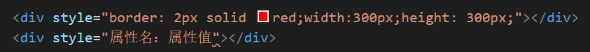

原文出处:本文由博客园博主cz11提供。
原文连接:https://www.cnblogs.com/czy18227988114/p/11487051.html
原文连接:https://www.cnblogs.com/czy18227988114/p/11487051.html
1、使用行内样式表
语法：在标签内部写入一个style属性。

优点：没有样式表文件，在某些时候可以提高效率；
优先级高。
缺点：多个页面难以共享样式，不利于代码复用；
HTML和CSS代码混杂，不利于程序员和搜索引擎阅读。
2、使用内部样式表
语法：在head标签写一个style标签，在style标签里面通过选择器（元素选择器、类选择器、ID选择器）来选择标签，从而控制该标签的样式。

优点：没有样式表文件，在某些时候可以提高效率；
缺点：多个页面难以共享样式，不利于代码复用，只能单个页面使用；
HTML和CSS代码混杂，不利于程序员和搜索引擎阅读。
3、外部样式表
语法：（1）需要新建一个外部CSS文件，在里面书写CSS样式；
（2）在head标签里面通过link来关联外部CSS文件。
例如：<link rel="stylesheet" href="css/style.css">,这样就可以在HTML文档里面直接书写界面的内容，在css文件里面调整格式，设计样式了。
优点：实现了内容结构和表现形式代码分离，方便复用和维护；
使HTML代码更加纯净，有利于程序员和搜索引擎阅读。